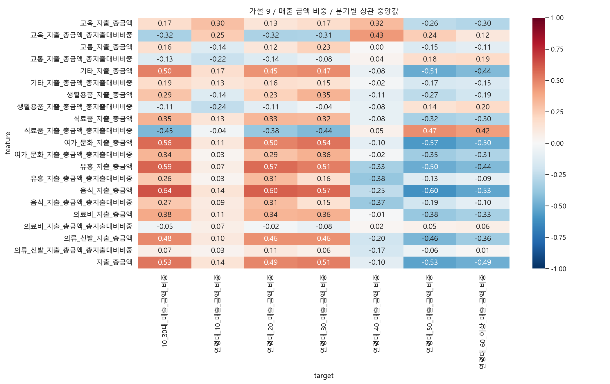
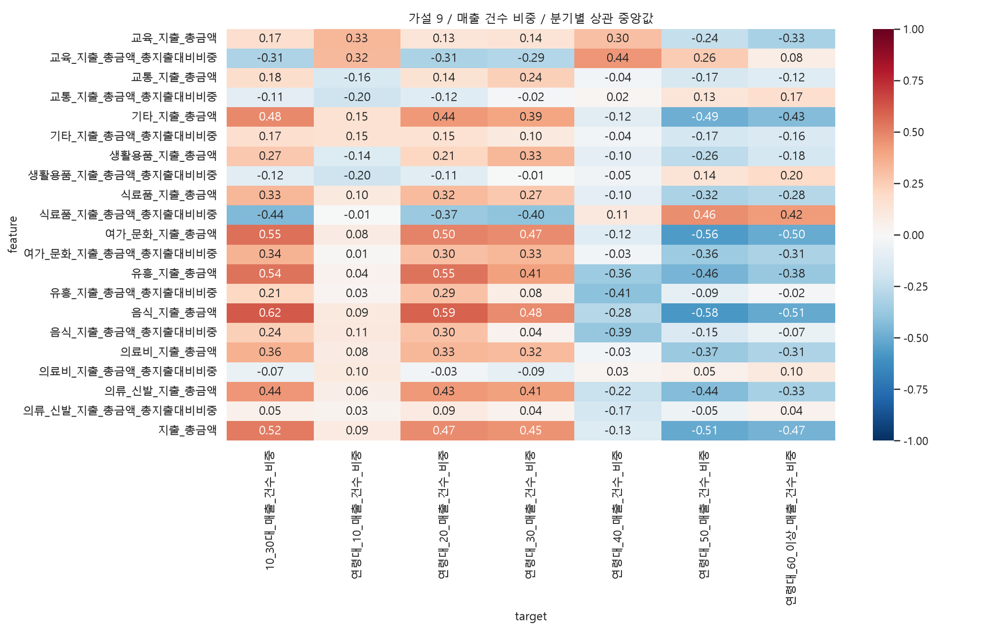

행정동·외식업 매출, 같은 분기의 지역 간 Spearman 탐색 분석입니다. 연령 확인 매출 합계를 분모로 금액·건수 비중을 각각 계산합니다. 건수는 고유 고객 수가 아닙니다. 비중은 합계 제약으로 서로 독립이 아니며 면적·상권규모·공간 의존성은 미통제입니다. 결측은 0으로 채우지 않고 쌍별 제외합니다. rho 중앙값은 통합 상관계수가 아닙니다. |중앙값|≥0.3, 방향 일치≥80%는 요약용 기준이지 통계적 가설 채택 기준이 아닙니다.
전체 및 항목별 지출 규모와 항목별 총지출 대비 비중을 분리합니다. 지출의 모집단·산출 방식이 추정매출과 같다고 단정하지 않습니다. 지출과 매출은 중복·공통 규모 요인이 있어 인과 예측변수로 자동 채택하지 않습니다.
| feature | target | median_rho | min_rho | max_rho | quarters | min_n | max_n | positive | negative | direction_consistency | exploratory_candidate |
|---|---|---|---|---|---|---|---|---|---|---|---|
| 음식_지출_총금액 | 10_30대_매출_건수_비중 | 0.615596 | 0.582328 | 0.627139 | 20 | 424 | 425 | 1.0 | 0.0 | 1.0 | True |
| 음식_지출_총금액 | 연령대_20_매출_건수_비중 | 0.587210 | 0.563703 | 0.606741 | 20 | 424 | 425 | 1.0 | 0.0 | 1.0 | True |
| 음식_지출_총금액 | 연령대_50_매출_건수_비중 | -0.580390 | -0.605354 | -0.513292 | 20 | 424 | 425 | 0.0 | 1.0 | 1.0 | True |
| 여가_문화_지출_총금액 | 연령대_50_매출_건수_비중 | -0.564171 | -0.598049 | -0.491294 | 20 | 424 | 425 | 0.0 | 1.0 | 1.0 | True |
| 여가_문화_지출_총금액 | 10_30대_매출_건수_비중 | 0.547536 | 0.515285 | 0.575415 | 20 | 424 | 425 | 1.0 | 0.0 | 1.0 | True |
| 유흥_지출_총금액 | 연령대_20_매출_건수_비중 | 0.546211 | 0.504122 | 0.564636 | 20 | 424 | 425 | 1.0 | 0.0 | 1.0 | True |
| 유흥_지출_총금액 | 10_30대_매출_건수_비중 | 0.543281 | 0.511009 | 0.561785 | 20 | 424 | 425 | 1.0 | 0.0 | 1.0 | True |
| 지출_총금액 | 10_30대_매출_건수_비중 | 0.518113 | 0.482681 | 0.531848 | 20 | 424 | 425 | 1.0 | 0.0 | 1.0 | True |


| feature | target | median_rho | min_rho | max_rho | quarters | min_n | max_n | positive | negative | direction_consistency | exploratory_candidate |
|---|---|---|---|---|---|---|---|---|---|---|---|
| 음식_지출_총금액 | 10_30대_매출_금액_비중 | 0.635343 | 0.607221 | 0.649751 | 20 | 424 | 425 | 1.00 | 0.00 | 1.00 | True |
| 음식_지출_총금액 | 10_30대_매출_건수_비중 | 0.615596 | 0.582328 | 0.627139 | 20 | 424 | 425 | 1.00 | 0.00 | 1.00 | True |
| 음식_지출_총금액 | 연령대_50_매출_금액_비중 | -0.603795 | -0.636620 | -0.545671 | 20 | 424 | 425 | 0.00 | 1.00 | 1.00 | True |
| 음식_지출_총금액 | 연령대_20_매출_금액_비중 | 0.597789 | 0.568682 | 0.610122 | 20 | 424 | 425 | 1.00 | 0.00 | 1.00 | True |
| 음식_지출_총금액 | 연령대_20_매출_건수_비중 | 0.587210 | 0.563703 | 0.606741 | 20 | 424 | 425 | 1.00 | 0.00 | 1.00 | True |
| 유흥_지출_총금액 | 10_30대_매출_금액_비중 | 0.585922 | 0.552274 | 0.614851 | 20 | 424 | 425 | 1.00 | 0.00 | 1.00 | True |
| 음식_지출_총금액 | 연령대_50_매출_건수_비중 | -0.580390 | -0.605354 | -0.513292 | 20 | 424 | 425 | 0.00 | 1.00 | 1.00 | True |
| 여가_문화_지출_총금액 | 연령대_50_매출_금액_비중 | -0.574383 | -0.612953 | -0.502765 | 20 | 424 | 425 | 0.00 | 1.00 | 1.00 | True |
| 음식_지출_총금액 | 연령대_30_매출_금액_비중 | 0.571956 | 0.520002 | 0.598525 | 20 | 424 | 425 | 1.00 | 0.00 | 1.00 | True |
| 유흥_지출_총금액 | 연령대_20_매출_금액_비중 | 0.570080 | 0.538760 | 0.594919 | 20 | 424 | 425 | 1.00 | 0.00 | 1.00 | True |
| 여가_문화_지출_총금액 | 연령대_50_매출_건수_비중 | -0.564171 | -0.598049 | -0.491294 | 20 | 424 | 425 | 0.00 | 1.00 | 1.00 | True |
| 여가_문화_지출_총금액 | 10_30대_매출_금액_비중 | 0.562800 | 0.541946 | 0.581302 | 20 | 424 | 425 | 1.00 | 0.00 | 1.00 | True |
| 여가_문화_지출_총금액 | 10_30대_매출_건수_비중 | 0.547536 | 0.515285 | 0.575415 | 20 | 424 | 425 | 1.00 | 0.00 | 1.00 | True |
| 유흥_지출_총금액 | 연령대_20_매출_건수_비중 | 0.546211 | 0.504122 | 0.564636 | 20 | 424 | 425 | 1.00 | 0.00 | 1.00 | True |
| 유흥_지출_총금액 | 10_30대_매출_건수_비중 | 0.543281 | 0.511009 | 0.561785 | 20 | 424 | 425 | 1.00 | 0.00 | 1.00 | True |
| 여가_문화_지출_총금액 | 연령대_30_매출_금액_비중 | 0.540906 | 0.503354 | 0.560772 | 20 | 424 | 425 | 1.00 | 0.00 | 1.00 | True |
| 지출_총금액 | 연령대_50_매출_금액_비중 | -0.533500 | -0.578398 | -0.459755 | 20 | 424 | 425 | 0.00 | 1.00 | 1.00 | True |
| 지출_총금액 | 10_30대_매출_금액_비중 | 0.531905 | 0.509889 | 0.552540 | 20 | 424 | 425 | 1.00 | 0.00 | 1.00 | True |
| 음식_지출_총금액 | 연령대_60_이상_매출_금액_비중 | -0.525568 | -0.546788 | -0.458239 | 20 | 424 | 425 | 0.00 | 1.00 | 1.00 | True |
| 지출_총금액 | 10_30대_매출_건수_비중 | 0.518113 | 0.482681 | 0.531848 | 20 | 424 | 425 | 1.00 | 0.00 | 1.00 | True |
| 지출_총금액 | 연령대_50_매출_건수_비중 | -0.514374 | -0.552182 | -0.451723 | 20 | 424 | 425 | 0.00 | 1.00 | 1.00 | True |
| 유흥_지출_총금액 | 연령대_30_매출_금액_비중 | 0.510778 | 0.434644 | 0.543894 | 20 | 424 | 425 | 1.00 | 0.00 | 1.00 | True |
| 지출_총금액 | 연령대_30_매출_금액_비중 | 0.509557 | 0.466012 | 0.530007 | 20 | 424 | 425 | 1.00 | 0.00 | 1.00 | True |
| 음식_지출_총금액 | 연령대_60_이상_매출_건수_비중 | -0.508787 | -0.528406 | -0.459485 | 20 | 424 | 425 | 0.00 | 1.00 | 1.00 | True |
| 기타_지출_총금액 | 연령대_50_매출_금액_비중 | -0.506380 | -0.548787 | -0.415306 | 20 | 424 | 425 | 0.00 | 1.00 | 1.00 | True |
| 여가_문화_지출_총금액 | 연령대_60_이상_매출_금액_비중 | -0.504560 | -0.546229 | -0.437009 | 20 | 424 | 425 | 0.00 | 1.00 | 1.00 | True |
| 기타_지출_총금액 | 10_30대_매출_금액_비중 | 0.503334 | 0.476634 | 0.534219 | 20 | 424 | 425 | 1.00 | 0.00 | 1.00 | True |
| 여가_문화_지출_총금액 | 연령대_60_이상_매출_건수_비중 | -0.503053 | -0.550637 | -0.424678 | 20 | 424 | 425 | 0.00 | 1.00 | 1.00 | True |
| 유흥_지출_총금액 | 연령대_50_매출_금액_비중 | -0.498483 | -0.531700 | -0.435307 | 20 | 424 | 425 | 0.00 | 1.00 | 1.00 | True |
| 여가_문화_지출_총금액 | 연령대_20_매출_건수_비중 | 0.498220 | 0.475692 | 0.523248 | 20 | 424 | 425 | 1.00 | 0.00 | 1.00 | True |
| 여가_문화_지출_총금액 | 연령대_20_매출_금액_비중 | 0.496816 | 0.480740 | 0.529955 | 20 | 424 | 425 | 1.00 | 0.00 | 1.00 | True |
| 기타_지출_총금액 | 연령대_50_매출_건수_비중 | -0.488547 | -0.537029 | -0.417742 | 20 | 424 | 425 | 0.00 | 1.00 | 1.00 | True |
| 지출_총금액 | 연령대_60_이상_매출_금액_비중 | -0.487169 | -0.500082 | -0.398909 | 20 | 424 | 425 | 0.00 | 1.00 | 1.00 | True |
| 지출_총금액 | 연령대_20_매출_금액_비중 | 0.486709 | 0.459835 | 0.502566 | 20 | 424 | 425 | 1.00 | 0.00 | 1.00 | True |
| 기타_지출_총금액 | 10_30대_매출_건수_비중 | 0.480262 | 0.460181 | 0.508042 | 20 | 424 | 425 | 1.00 | 0.00 | 1.00 | True |
| 의류_신발_지출_총금액 | 10_30대_매출_금액_비중 | 0.476802 | 0.448087 | 0.512679 | 20 | 424 | 425 | 1.00 | 0.00 | 1.00 | True |
| 음식_지출_총금액 | 연령대_30_매출_건수_비중 | 0.475754 | 0.411996 | 0.535720 | 20 | 424 | 425 | 1.00 | 0.00 | 1.00 | True |
| 지출_총금액 | 연령대_20_매출_건수_비중 | 0.474037 | 0.440558 | 0.490088 | 20 | 424 | 425 | 1.00 | 0.00 | 1.00 | True |
| 기타_지출_총금액 | 연령대_30_매출_금액_비중 | 0.473942 | 0.449261 | 0.492060 | 20 | 424 | 425 | 1.00 | 0.00 | 1.00 | True |
| 여가_문화_지출_총금액 | 연령대_30_매출_건수_비중 | 0.473624 | 0.406464 | 0.501319 | 20 | 424 | 425 | 1.00 | 0.00 | 1.00 | True |
| 지출_총금액 | 연령대_60_이상_매출_건수_비중 | -0.469081 | -0.497798 | -0.408418 | 20 | 424 | 425 | 0.00 | 1.00 | 1.00 | True |
| 식료품_지출_총금액_총지출대비비중 | 연령대_50_매출_금액_비중 | 0.466869 | 0.439565 | 0.517028 | 20 | 424 | 425 | 1.00 | 0.00 | 1.00 | True |
| 식료품_지출_총금액_총지출대비비중 | 연령대_50_매출_건수_비중 | 0.464548 | 0.429656 | 0.506620 | 20 | 424 | 425 | 1.00 | 0.00 | 1.00 | True |
| 유흥_지출_총금액 | 연령대_50_매출_건수_비중 | -0.461668 | -0.503464 | -0.402531 | 20 | 424 | 425 | 0.00 | 1.00 | 1.00 | True |
| 의류_신발_지출_총금액 | 연령대_50_매출_금액_비중 | -0.459652 | -0.489571 | -0.426345 | 20 | 424 | 425 | 0.00 | 1.00 | 1.00 | True |
| 의류_신발_지출_총금액 | 연령대_20_매출_금액_비중 | 0.458653 | 0.422680 | 0.495651 | 20 | 424 | 425 | 1.00 | 0.00 | 1.00 | True |
| 의류_신발_지출_총금액 | 연령대_30_매출_금액_비중 | 0.456575 | 0.417261 | 0.493034 | 20 | 424 | 425 | 1.00 | 0.00 | 1.00 | True |
| 지출_총금액 | 연령대_30_매출_건수_비중 | 0.447114 | 0.381198 | 0.474533 | 20 | 424 | 425 | 1.00 | 0.00 | 1.00 | True |
| 기타_지출_총금액 | 연령대_20_매출_금액_비중 | 0.445847 | 0.416290 | 0.494178 | 20 | 424 | 425 | 1.00 | 0.00 | 1.00 | True |
| 식료품_지출_총금액_총지출대비비중 | 10_30대_매출_금액_비중 | -0.445506 | -0.461455 | -0.420458 | 20 | 424 | 425 | 0.00 | 1.00 | 1.00 | True |
| 의류_신발_지출_총금액 | 10_30대_매출_건수_비중 | 0.444946 | 0.414381 | 0.483781 | 20 | 424 | 425 | 1.00 | 0.00 | 1.00 | True |
| 기타_지출_총금액 | 연령대_60_이상_매출_금액_비중 | -0.444414 | -0.479525 | -0.411354 | 20 | 424 | 425 | 0.00 | 1.00 | 1.00 | True |
| 식료품_지출_총금액_총지출대비비중 | 연령대_30_매출_금액_비중 | -0.441189 | -0.463577 | -0.409888 | 20 | 424 | 425 | 0.00 | 1.00 | 1.00 | True |
| 식료품_지출_총금액_총지출대비비중 | 10_30대_매출_건수_비중 | -0.440720 | -0.459685 | -0.405215 | 20 | 424 | 425 | 0.00 | 1.00 | 1.00 | True |
| 교육_지출_총금액_총지출대비비중 | 연령대_40_매출_건수_비중 | 0.439878 | 0.402718 | 0.481321 | 20 | 424 | 425 | 1.00 | 0.00 | 1.00 | True |
| 유흥_지출_총금액 | 연령대_60_이상_매출_금액_비중 | -0.437529 | -0.459401 | -0.393952 | 20 | 424 | 425 | 0.00 | 1.00 | 1.00 | True |
| 기타_지출_총금액 | 연령대_20_매출_건수_비중 | 0.437232 | 0.418445 | 0.477571 | 20 | 424 | 425 | 1.00 | 0.00 | 1.00 | True |
| 의류_신발_지출_총금액 | 연령대_50_매출_건수_비중 | -0.436945 | -0.459290 | -0.416128 | 20 | 424 | 425 | 0.00 | 1.00 | 1.00 | True |
| 기타_지출_총금액 | 연령대_60_이상_매출_건수_비중 | -0.434600 | -0.467734 | -0.406070 | 20 | 424 | 425 | 0.00 | 1.00 | 1.00 | True |
| 의류_신발_지출_총금액 | 연령대_20_매출_건수_비중 | 0.434580 | 0.395045 | 0.478637 | 20 | 424 | 425 | 1.00 | 0.00 | 1.00 | True |
| 교육_지출_총금액_총지출대비비중 | 연령대_40_매출_금액_비중 | 0.431189 | 0.397916 | 0.468465 | 20 | 424 | 425 | 1.00 | 0.00 | 1.00 | True |
| 식료품_지출_총금액_총지출대비비중 | 연령대_60_이상_매출_건수_비중 | 0.423199 | 0.380015 | 0.462753 | 20 | 424 | 425 | 1.00 | 0.00 | 1.00 | True |
| 식료품_지출_총금액_총지출대비비중 | 연령대_60_이상_매출_금액_비중 | 0.421430 | 0.373299 | 0.465864 | 20 | 424 | 425 | 1.00 | 0.00 | 1.00 | True |
| 의류_신발_지출_총금액 | 연령대_30_매출_건수_비중 | 0.412918 | 0.330114 | 0.443372 | 20 | 424 | 425 | 1.00 | 0.00 | 1.00 | True |
| 유흥_지출_총금액 | 연령대_30_매출_건수_비중 | 0.409687 | 0.319865 | 0.459979 | 20 | 424 | 425 | 1.00 | 0.00 | 1.00 | True |
| 유흥_지출_총금액_총지출대비비중 | 연령대_40_매출_건수_비중 | -0.406430 | -0.440598 | -0.328081 | 20 | 424 | 425 | 0.00 | 1.00 | 1.00 | True |
| 식료품_지출_총금액_총지출대비비중 | 연령대_30_매출_건수_비중 | -0.404009 | -0.420497 | -0.358142 | 20 | 424 | 425 | 0.00 | 1.00 | 1.00 | True |
| 기타_지출_총금액 | 연령대_30_매출_건수_비중 | 0.394116 | 0.352010 | 0.434271 | 20 | 424 | 425 | 1.00 | 0.00 | 1.00 | True |
| 음식_지출_총금액_총지출대비비중 | 연령대_40_매출_건수_비중 | -0.389734 | -0.428957 | -0.310811 | 20 | 424 | 425 | 0.00 | 1.00 | 1.00 | True |
| 유흥_지출_총금액_총지출대비비중 | 연령대_40_매출_금액_비중 | -0.383154 | -0.447715 | -0.312500 | 20 | 424 | 425 | 0.00 | 1.00 | 1.00 | True |
| 의료비_지출_총금액 | 연령대_50_매출_금액_비중 | -0.377851 | -0.421566 | -0.328204 | 20 | 424 | 425 | 0.00 | 1.00 | 1.00 | True |
| 식료품_지출_총금액_총지출대비비중 | 연령대_20_매출_금액_비중 | -0.377777 | -0.403234 | -0.339011 | 20 | 424 | 425 | 0.00 | 1.00 | 1.00 | True |
| 유흥_지출_총금액 | 연령대_60_이상_매출_건수_비중 | -0.376748 | -0.411276 | -0.357030 | 20 | 424 | 425 | 0.00 | 1.00 | 1.00 | True |
| 의료비_지출_총금액 | 10_30대_매출_금액_비중 | 0.376723 | 0.353942 | 0.394546 | 20 | 424 | 425 | 1.00 | 0.00 | 1.00 | True |
| 의료비_지출_총금액 | 연령대_50_매출_건수_비중 | -0.372138 | -0.402857 | -0.325054 | 20 | 424 | 425 | 0.00 | 1.00 | 1.00 | True |
| 음식_지출_총금액_총지출대비비중 | 연령대_40_매출_금액_비중 | -0.371240 | -0.432284 | -0.322641 | 20 | 424 | 425 | 0.00 | 1.00 | 1.00 | True |
| 식료품_지출_총금액_총지출대비비중 | 연령대_20_매출_건수_비중 | -0.369471 | -0.396828 | -0.322531 | 20 | 424 | 425 | 0.00 | 1.00 | 1.00 | True |
| 여가_문화_지출_총금액_총지출대비비중 | 연령대_50_매출_건수_비중 | -0.364971 | -0.413157 | -0.316964 | 20 | 424 | 425 | 0.00 | 1.00 | 1.00 | True |
| 유흥_지출_총금액 | 연령대_40_매출_건수_비중 | -0.361158 | -0.421524 | -0.300885 | 20 | 424 | 425 | 0.00 | 1.00 | 1.00 | True |
| 의료비_지출_총금액 | 10_30대_매출_건수_비중 | 0.359086 | 0.342729 | 0.373808 | 20 | 424 | 425 | 1.00 | 0.00 | 1.00 | True |
| 의류_신발_지출_총금액 | 연령대_60_이상_매출_금액_비중 | -0.358283 | -0.406075 | -0.310177 | 20 | 424 | 425 | 0.00 | 1.00 | 1.00 | True |
| 의료비_지출_총금액 | 연령대_30_매출_금액_비중 | 0.356670 | 0.330253 | 0.388976 | 20 | 424 | 425 | 1.00 | 0.00 | 1.00 | True |
| 여가_문화_지출_총금액_총지출대비비중 | 연령대_30_매출_금액_비중 | 0.356483 | 0.304869 | 0.390737 | 20 | 424 | 425 | 1.00 | 0.00 | 1.00 | True |
| 여가_문화_지출_총금액_총지출대비비중 | 연령대_50_매출_금액_비중 | -0.352634 | -0.429814 | -0.315113 | 20 | 424 | 425 | 0.00 | 1.00 | 1.00 | True |
| 생활용품_지출_총금액 | 연령대_30_매출_금액_비중 | 0.349956 | 0.288075 | 0.373907 | 20 | 424 | 425 | 1.00 | 0.00 | 1.00 | True |
| 식료품_지출_총금액 | 10_30대_매출_금액_비중 | 0.346753 | 0.286572 | 0.373270 | 20 | 424 | 425 | 1.00 | 0.00 | 1.00 | True |
| 여가_문화_지출_총금액_총지출대비비중 | 10_30대_매출_건수_비중 | 0.344791 | 0.321223 | 0.400771 | 20 | 424 | 425 | 1.00 | 0.00 | 1.00 | True |
| 여가_문화_지출_총금액_총지출대비비중 | 10_30대_매출_금액_비중 | 0.342587 | 0.309040 | 0.402646 | 20 | 424 | 425 | 1.00 | 0.00 | 1.00 | True |
| 의료비_지출_총금액 | 연령대_20_매출_금액_비중 | 0.341162 | 0.312366 | 0.362972 | 20 | 424 | 425 | 1.00 | 0.00 | 1.00 | True |
| 생활용품_지출_총금액 | 연령대_30_매출_건수_비중 | 0.334572 | 0.274080 | 0.361574 | 20 | 424 | 425 | 1.00 | 0.00 | 1.00 | True |
| 식료품_지출_총금액 | 연령대_20_매출_금액_비중 | 0.332870 | 0.267887 | 0.358648 | 20 | 424 | 425 | 1.00 | 0.00 | 1.00 | True |
| 의료비_지출_총금액 | 연령대_60_이상_매출_금액_비중 | -0.332827 | -0.354750 | -0.258736 | 20 | 424 | 425 | 0.00 | 1.00 | 1.00 | True |
| 여가_문화_지출_총금액_총지출대비비중 | 연령대_30_매출_건수_비중 | 0.332187 | 0.267267 | 0.360411 | 20 | 424 | 425 | 1.00 | 0.00 | 1.00 | True |
| 유흥_지출_총금액 | 연령대_40_매출_금액_비중 | -0.331417 | -0.401095 | -0.256996 | 20 | 424 | 425 | 0.00 | 1.00 | 1.00 | True |
| 의류_신발_지출_총금액 | 연령대_60_이상_매출_건수_비중 | -0.331307 | -0.372819 | -0.289265 | 20 | 424 | 425 | 0.00 | 1.00 | 1.00 | True |
| 교육_지출_총금액 | 연령대_10_매출_건수_비중 | 0.331156 | 0.298967 | 0.394487 | 20 | 424 | 425 | 1.00 | 0.00 | 1.00 | True |
| 식료품_지출_총금액 | 10_30대_매출_건수_비중 | 0.328629 | 0.263270 | 0.359750 | 20 | 424 | 425 | 1.00 | 0.00 | 1.00 | True |
| 의료비_지출_총금액 | 연령대_20_매출_건수_비중 | 0.328326 | 0.306050 | 0.347260 | 20 | 424 | 425 | 1.00 | 0.00 | 1.00 | True |
| 교육_지출_총금액 | 연령대_60_이상_매출_건수_비중 | -0.327522 | -0.357515 | -0.283542 | 20 | 424 | 425 | 0.00 | 1.00 | 1.00 | True |
| 식료품_지출_총금액 | 연령대_50_매출_금액_비중 | -0.324772 | -0.362525 | -0.246991 | 20 | 424 | 425 | 0.00 | 1.00 | 1.00 | True |
| 교육_지출_총금액_총지출대비비중 | 연령대_10_매출_건수_비중 | 0.322390 | 0.162730 | 0.363908 | 20 | 424 | 425 | 1.00 | 0.00 | 1.00 | True |
| 식료품_지출_총금액 | 연령대_30_매출_금액_비중 | 0.321981 | 0.269395 | 0.340599 | 20 | 424 | 425 | 1.00 | 0.00 | 1.00 | True |
| 교육_지출_총금액_총지출대비비중 | 10_30대_매출_금액_비중 | -0.320558 | -0.374716 | -0.252461 | 20 | 424 | 425 | 0.00 | 1.00 | 1.00 | True |
| 교육_지출_총금액 | 연령대_40_매출_금액_비중 | 0.319348 | 0.184028 | 0.362731 | 20 | 424 | 425 | 1.00 | 0.00 | 1.00 | True |
| 의료비_지출_총금액 | 연령대_30_매출_건수_비중 | 0.318381 | 0.274401 | 0.340066 | 20 | 424 | 425 | 1.00 | 0.00 | 1.00 | True |
| 식료품_지출_총금액 | 연령대_20_매출_건수_비중 | 0.317587 | 0.262252 | 0.353925 | 20 | 424 | 425 | 1.00 | 0.00 | 1.00 | True |
| 식료품_지출_총금액 | 연령대_50_매출_건수_비중 | -0.316934 | -0.352578 | -0.256219 | 20 | 424 | 425 | 0.00 | 1.00 | 1.00 | True |
| 교육_지출_총금액_총지출대비비중 | 연령대_20_매출_금액_비중 | -0.316832 | -0.388506 | -0.261159 | 20 | 424 | 425 | 0.00 | 1.00 | 1.00 | True |
| 유흥_지출_총금액_총지출대비비중 | 연령대_20_매출_금액_비중 | 0.314509 | 0.260486 | 0.360901 | 20 | 424 | 425 | 1.00 | 0.00 | 1.00 | True |
| 교육_지출_총금액_총지출대비비중 | 연령대_20_매출_건수_비중 | -0.314429 | -0.363115 | -0.250009 | 20 | 424 | 425 | 0.00 | 1.00 | 1.00 | True |
| 여가_문화_지출_총금액_총지출대비비중 | 연령대_60_이상_매출_건수_비중 | -0.314422 | -0.371856 | -0.267144 | 20 | 424 | 425 | 0.00 | 1.00 | 1.00 | True |
| 의료비_지출_총금액 | 연령대_60_이상_매출_건수_비중 | -0.311328 | -0.329844 | -0.268927 | 20 | 424 | 425 | 0.00 | 1.00 | 1.00 | True |
| 교육_지출_총금액_총지출대비비중 | 연령대_30_매출_금액_비중 | -0.310159 | -0.349541 | -0.242341 | 20 | 424 | 425 | 0.00 | 1.00 | 1.00 | True |
| 교육_지출_총금액_총지출대비비중 | 10_30대_매출_건수_비중 | -0.308699 | -0.349885 | -0.243467 | 20 | 424 | 425 | 0.00 | 1.00 | 1.00 | True |
| 음식_지출_총금액_총지출대비비중 | 연령대_20_매출_금액_비중 | 0.308299 | 0.238923 | 0.343127 | 20 | 424 | 425 | 1.00 | 0.00 | 1.00 | True |
| 여가_문화_지출_총금액_총지출대비비중 | 연령대_60_이상_매출_금액_비중 | -0.305569 | -0.353202 | -0.250490 | 20 | 424 | 425 | 0.00 | 1.00 | 1.00 | True |
| 식료품_지출_총금액 | 연령대_60_이상_매출_금액_비중 | -0.301039 | -0.323355 | -0.209363 | 20 | 424 | 425 | 0.00 | 1.00 | 1.00 | True |
| 교육_지출_총금액 | 연령대_40_매출_건수_비중 | 0.298949 | 0.158482 | 0.356234 | 20 | 424 | 425 | 1.00 | 0.00 | 1.00 | False |
| 여가_문화_지출_총금액_총지출대비비중 | 연령대_20_매출_건수_비중 | 0.298143 | 0.257990 | 0.360702 | 20 | 424 | 425 | 1.00 | 0.00 | 1.00 | False |
| 교육_지출_총금액 | 연령대_10_매출_금액_비중 | 0.297267 | 0.258588 | 0.358932 | 20 | 424 | 425 | 1.00 | 0.00 | 1.00 | False |
| 교육_지출_총금액 | 연령대_60_이상_매출_금액_비중 | -0.296365 | -0.321040 | -0.269552 | 20 | 424 | 425 | 0.00 | 1.00 | 1.00 | False |
| 음식_지출_총금액_총지출대비비중 | 연령대_20_매출_건수_비중 | 0.295363 | 0.240523 | 0.336091 | 20 | 424 | 425 | 1.00 | 0.00 | 1.00 | False |
| 여가_문화_지출_총금액_총지출대비비중 | 연령대_20_매출_금액_비중 | 0.294446 | 0.252292 | 0.355529 | 20 | 424 | 425 | 1.00 | 0.00 | 1.00 | False |
| 교육_지출_총금액_총지출대비비중 | 연령대_30_매출_건수_비중 | -0.294183 | -0.335226 | -0.236061 | 20 | 424 | 425 | 0.00 | 1.00 | 1.00 | False |
| 유흥_지출_총금액_총지출대비비중 | 연령대_20_매출_건수_비중 | 0.289246 | 0.224261 | 0.316319 | 20 | 424 | 425 | 1.00 | 0.00 | 1.00 | False |
| 생활용품_지출_총금액 | 10_30대_매출_금액_비중 | 0.285098 | 0.227912 | 0.307242 | 20 | 424 | 425 | 1.00 | 0.00 | 1.00 | False |
| 식료품_지출_총금액 | 연령대_60_이상_매출_건수_비중 | -0.284516 | -0.322358 | -0.207758 | 20 | 424 | 425 | 0.00 | 1.00 | 1.00 | False |
| 음식_지출_총금액 | 연령대_40_매출_건수_비중 | -0.282509 | -0.384881 | -0.152621 | 20 | 424 | 425 | 0.00 | 1.00 | 1.00 | False |
| 식료품_지출_총금액 | 연령대_30_매출_건수_비중 | 0.268969 | 0.195697 | 0.294239 | 20 | 424 | 425 | 1.00 | 0.00 | 1.00 | False |
| 음식_지출_총금액_총지출대비비중 | 10_30대_매출_금액_비중 | 0.267203 | 0.184179 | 0.296430 | 20 | 424 | 425 | 1.00 | 0.00 | 1.00 | False |
| 생활용품_지출_총금액 | 10_30대_매출_건수_비중 | 0.265863 | 0.196430 | 0.290389 | 20 | 424 | 425 | 1.00 | 0.00 | 1.00 | False |
| 생활용품_지출_총금액 | 연령대_50_매출_금액_비중 | -0.265590 | -0.314359 | -0.211159 | 20 | 424 | 425 | 0.00 | 1.00 | 1.00 | False |
| 유흥_지출_총금액_총지출대비비중 | 10_30대_매출_금액_비중 | 0.263108 | 0.183014 | 0.299761 | 20 | 424 | 425 | 1.00 | 0.00 | 1.00 | False |
| 생활용품_지출_총금액 | 연령대_50_매출_건수_비중 | -0.261277 | -0.287888 | -0.179040 | 20 | 424 | 425 | 0.00 | 1.00 | 1.00 | False |
| 교육_지출_총금액 | 연령대_50_매출_금액_비중 | -0.257931 | -0.307040 | -0.120556 | 20 | 424 | 425 | 0.00 | 1.00 | 1.00 | False |
| 교육_지출_총금액_총지출대비비중 | 연령대_50_매출_건수_비중 | 0.255121 | 0.158488 | 0.335580 | 20 | 424 | 425 | 1.00 | 0.00 | 1.00 | False |
| 음식_지출_총금액 | 연령대_40_매출_금액_비중 | -0.254077 | -0.348056 | -0.129766 | 20 | 424 | 425 | 0.00 | 1.00 | 1.00 | False |
| 교육_지출_총금액_총지출대비비중 | 연령대_10_매출_금액_비중 | 0.252296 | 0.091739 | 0.291523 | 20 | 424 | 425 | 1.00 | 0.00 | 1.00 | False |
| 교육_지출_총금액_총지출대비비중 | 연령대_50_매출_금액_비중 | 0.243219 | 0.166440 | 0.323512 | 20 | 424 | 425 | 1.00 | 0.00 | 1.00 | False |
| 생활용품_지출_총금액_총지출대비비중 | 연령대_10_매출_금액_비중 | -0.242246 | -0.288859 | -0.171988 | 20 | 424 | 425 | 0.00 | 1.00 | 1.00 | False |
| 교통_지출_총금액 | 연령대_30_매출_건수_비중 | 0.241176 | 0.220335 | 0.286021 | 20 | 424 | 425 | 1.00 | 0.00 | 1.00 | False |
| 교육_지출_총금액 | 연령대_50_매출_건수_비중 | -0.240155 | -0.285167 | -0.112616 | 20 | 424 | 425 | 0.00 | 1.00 | 1.00 | False |
| 음식_지출_총금액_총지출대비비중 | 10_30대_매출_건수_비중 | 0.235197 | 0.169891 | 0.267334 | 20 | 424 | 425 | 1.00 | 0.00 | 1.00 | False |
| 생활용품_지출_총금액 | 연령대_20_매출_금액_비중 | 0.229727 | 0.187751 | 0.300459 | 20 | 424 | 425 | 1.00 | 0.00 | 1.00 | False |
| 교통_지출_총금액 | 연령대_30_매출_금액_비중 | 0.229641 | 0.184670 | 0.272317 | 20 | 424 | 425 | 1.00 | 0.00 | 1.00 | False |
| 의류_신발_지출_총금액 | 연령대_40_매출_건수_비중 | -0.224683 | -0.313441 | -0.140281 | 20 | 424 | 425 | 0.00 | 1.00 | 1.00 | False |
| 교통_지출_총금액_총지출대비비중 | 연령대_10_매출_금액_비중 | -0.221035 | -0.239312 | -0.164663 | 20 | 424 | 425 | 0.00 | 1.00 | 1.00 | False |
| 생활용품_지출_총금액 | 연령대_20_매출_건수_비중 | 0.214170 | 0.156756 | 0.293902 | 20 | 424 | 425 | 1.00 | 0.00 | 1.00 | False |
| 유흥_지출_총금액_총지출대비비중 | 10_30대_매출_건수_비중 | 0.210126 | 0.161232 | 0.245379 | 20 | 424 | 425 | 1.00 | 0.00 | 1.00 | False |
| 생활용품_지출_총금액_총지출대비비중 | 연령대_10_매출_건수_비중 | -0.204655 | -0.263959 | -0.149946 | 20 | 424 | 425 | 0.00 | 1.00 | 1.00 | False |
| 교통_지출_총금액_총지출대비비중 | 연령대_10_매출_건수_비중 | -0.203716 | -0.239893 | -0.179069 | 20 | 424 | 425 | 0.00 | 1.00 | 1.00 | False |
| 의류_신발_지출_총금액 | 연령대_40_매출_금액_비중 | -0.196307 | -0.296032 | -0.121843 | 20 | 424 | 425 | 0.00 | 1.00 | 1.00 | False |
| 생활용품_지출_총금액_총지출대비비중 | 연령대_60_이상_매출_금액_비중 | 0.195176 | 0.122314 | 0.252206 | 20 | 424 | 425 | 1.00 | 0.00 | 1.00 | False |
| 생활용품_지출_총금액_총지출대비비중 | 연령대_60_이상_매출_건수_비중 | 0.195051 | 0.122171 | 0.273458 | 20 | 424 | 425 | 1.00 | 0.00 | 1.00 | False |
| 생활용품_지출_총금액 | 연령대_60_이상_매출_금액_비중 | -0.190208 | -0.223911 | -0.157407 | 20 | 424 | 425 | 0.00 | 1.00 | 1.00 | False |
| 교통_지출_총금액_총지출대비비중 | 연령대_60_이상_매출_금액_비중 | 0.188342 | 0.162665 | 0.206030 | 20 | 424 | 425 | 1.00 | 0.00 | 1.00 | False |
| 음식_지출_총금액_총지출대비비중 | 연령대_50_매출_금액_비중 | -0.188222 | -0.226136 | -0.090136 | 20 | 424 | 425 | 0.00 | 1.00 | 1.00 | False |
| 기타_지출_총금액_총지출대비비중 | 10_30대_매출_금액_비중 | 0.186426 | 0.137281 | 0.248372 | 20 | 424 | 425 | 1.00 | 0.00 | 1.00 | False |
| 교통_지출_총금액 | 10_30대_매출_건수_비중 | 0.178920 | 0.152120 | 0.206905 | 20 | 424 | 425 | 1.00 | 0.00 | 1.00 | False |
| 생활용품_지출_총금액 | 연령대_60_이상_매출_건수_비중 | -0.177905 | -0.212401 | -0.129521 | 20 | 424 | 425 | 0.00 | 1.00 | 1.00 | False |
| 교통_지출_총금액_총지출대비비중 | 연령대_50_매출_금액_비중 | 0.176510 | 0.113589 | 0.207689 | 20 | 424 | 425 | 1.00 | 0.00 | 1.00 | False |
| 의류_신발_지출_총금액_총지출대비비중 | 연령대_40_매출_건수_비중 | -0.174463 | -0.246641 | -0.141384 | 20 | 424 | 425 | 0.00 | 1.00 | 1.00 | False |
| 기타_지출_총금액_총지출대비비중 | 연령대_50_매출_건수_비중 | -0.174103 | -0.246757 | -0.127875 | 20 | 424 | 425 | 0.00 | 1.00 | 1.00 | False |
| 교육_지출_총금액 | 10_30대_매출_금액_비중 | 0.173236 | 0.117624 | 0.215061 | 20 | 424 | 425 | 1.00 | 0.00 | 1.00 | False |
| 의류_신발_지출_총금액_총지출대비비중 | 연령대_40_매출_금액_비중 | -0.172975 | -0.223031 | -0.112868 | 20 | 424 | 425 | 0.00 | 1.00 | 1.00 | False |
| 교육_지출_총금액 | 연령대_30_매출_금액_비중 | 0.172816 | 0.138232 | 0.234604 | 20 | 424 | 425 | 1.00 | 0.00 | 1.00 | False |
| 기타_지출_총금액_총지출대비비중 | 연령대_50_매출_금액_비중 | -0.168894 | -0.267561 | -0.114494 | 20 | 424 | 425 | 0.00 | 1.00 | 1.00 | False |
| 기타_지출_총금액 | 연령대_10_매출_금액_비중 | 0.167953 | 0.133258 | 0.231875 | 20 | 424 | 425 | 1.00 | 0.00 | 1.00 | False |
| 기타_지출_총금액_총지출대비비중 | 10_30대_매출_건수_비중 | 0.167922 | 0.130118 | 0.230920 | 20 | 424 | 425 | 1.00 | 0.00 | 1.00 | False |
| 교육_지출_총금액 | 10_30대_매출_건수_비중 | 0.167470 | 0.128723 | 0.204611 | 20 | 424 | 425 | 1.00 | 0.00 | 1.00 | False |
| 교통_지출_총금액_총지출대비비중 | 연령대_60_이상_매출_건수_비중 | 0.166950 | 0.149921 | 0.200164 | 20 | 424 | 425 | 1.00 | 0.00 | 1.00 | False |
| 교통_지출_총금액 | 연령대_50_매출_건수_비중 | -0.166650 | -0.216068 | -0.129660 | 20 | 424 | 425 | 0.00 | 1.00 | 1.00 | False |
| 기타_지출_총금액_총지출대비비중 | 연령대_20_매출_금액_비중 | 0.164870 | 0.108410 | 0.245397 | 20 | 424 | 425 | 1.00 | 0.00 | 1.00 | False |
| 교통_지출_총금액 | 연령대_10_매출_건수_비중 | -0.162612 | -0.192293 | -0.112709 | 20 | 424 | 425 | 0.00 | 1.00 | 1.00 | False |
| 교통_지출_총금액 | 10_30대_매출_금액_비중 | 0.160792 | 0.132594 | 0.201653 | 20 | 424 | 425 | 1.00 | 0.00 | 1.00 | False |
| 유흥_지출_총금액_총지출대비비중 | 연령대_30_매출_금액_비중 | 0.157181 | 0.015901 | 0.198919 | 20 | 424 | 425 | 1.00 | 0.00 | 1.00 | False |
| 기타_지출_총금액_총지출대비비중 | 연령대_60_이상_매출_건수_비중 | -0.156005 | -0.199057 | -0.130800 | 20 | 424 | 425 | 0.00 | 1.00 | 1.00 | False |
| 기타_지출_총금액 | 연령대_10_매출_건수_비중 | 0.154632 | 0.100904 | 0.216039 | 20 | 424 | 425 | 1.00 | 0.00 | 1.00 | False |
| 기타_지출_총금액_총지출대비비중 | 연령대_60_이상_매출_금액_비중 | -0.154169 | -0.202334 | -0.108423 | 20 | 424 | 425 | 0.00 | 1.00 | 1.00 | False |
| 기타_지출_총금액_총지출대비비중 | 연령대_10_매출_건수_비중 | 0.153744 | 0.114030 | 0.211197 | 20 | 424 | 425 | 1.00 | 0.00 | 1.00 | False |
| 기타_지출_총금액_총지출대비비중 | 연령대_20_매출_건수_비중 | 0.153609 | 0.106547 | 0.235405 | 20 | 424 | 425 | 1.00 | 0.00 | 1.00 | False |
| 기타_지출_총금액_총지출대비비중 | 연령대_30_매출_금액_비중 | 0.152971 | 0.121418 | 0.182366 | 20 | 424 | 425 | 1.00 | 0.00 | 1.00 | False |
| 음식_지출_총금액_총지출대비비중 | 연령대_50_매출_건수_비중 | -0.151118 | -0.184076 | -0.084707 | 20 | 424 | 425 | 0.00 | 1.00 | 1.00 | False |
| 음식_지출_총금액_총지출대비비중 | 연령대_30_매출_금액_비중 | 0.149950 | 0.046122 | 0.198262 | 20 | 424 | 425 | 1.00 | 0.00 | 1.00 | False |
| 교통_지출_총금액 | 연령대_50_매출_금액_비중 | -0.145090 | -0.219622 | -0.094362 | 20 | 424 | 425 | 0.00 | 1.00 | 1.00 | False |
| 생활용품_지출_총금액_총지출대비비중 | 연령대_50_매출_금액_비중 | 0.143236 | 0.072106 | 0.209949 | 20 | 424 | 425 | 1.00 | 0.00 | 1.00 | False |
| 교통_지출_총금액 | 연령대_20_매출_건수_비중 | 0.141599 | 0.115064 | 0.157214 | 20 | 424 | 425 | 1.00 | 0.00 | 1.00 | False |
| 음식_지출_총금액 | 연령대_10_매출_금액_비중 | 0.140470 | 0.059996 | 0.262673 | 20 | 424 | 425 | 1.00 | 0.00 | 1.00 | False |
| 생활용품_지출_총금액_총지출대비비중 | 연령대_50_매출_건수_비중 | 0.139678 | 0.091025 | 0.198857 | 20 | 424 | 425 | 1.00 | 0.00 | 1.00 | False |
| 지출_총금액 | 연령대_10_매출_금액_비중 | 0.138761 | 0.066183 | 0.240862 | 20 | 424 | 425 | 1.00 | 0.00 | 1.00 | False |
| 교통_지출_총금액 | 연령대_10_매출_금액_비중 | -0.137798 | -0.174870 | -0.092829 | 20 | 424 | 425 | 0.00 | 1.00 | 1.00 | False |
| 생활용품_지출_총금액 | 연령대_10_매출_금액_비중 | -0.137669 | -0.165134 | -0.069136 | 20 | 424 | 425 | 0.00 | 1.00 | 1.00 | False |
| 생활용품_지출_총금액 | 연령대_10_매출_건수_비중 | -0.137558 | -0.170039 | -0.089699 | 20 | 424 | 425 | 0.00 | 1.00 | 1.00 | False |
| 교통_지출_총금액_총지출대비비중 | 연령대_20_매출_금액_비중 | -0.136287 | -0.154382 | -0.109996 | 20 | 424 | 425 | 0.00 | 1.00 | 1.00 | False |
| 교육_지출_총금액 | 연령대_30_매출_건수_비중 | 0.135532 | 0.116533 | 0.172947 | 20 | 424 | 425 | 1.00 | 0.00 | 1.00 | False |
| 교통_지출_총금액_총지출대비비중 | 10_30대_매출_금액_비중 | -0.133911 | -0.156028 | -0.108580 | 20 | 424 | 425 | 0.00 | 1.00 | 1.00 | False |
| 지출_총금액 | 연령대_40_매출_건수_비중 | -0.133094 | -0.256725 | -0.019516 | 20 | 424 | 425 | 0.00 | 1.00 | 1.00 | False |
| 교육_지출_총금액 | 연령대_20_매출_금액_비중 | 0.130803 | 0.067224 | 0.176781 | 20 | 424 | 425 | 1.00 | 0.00 | 1.00 | False |
| 교통_지출_총금액_총지출대비비중 | 연령대_50_매출_건수_비중 | 0.130562 | 0.106169 | 0.185208 | 20 | 424 | 425 | 1.00 | 0.00 | 1.00 | False |
| 식료품_지출_총금액 | 연령대_10_매출_금액_비중 | 0.130259 | 0.066190 | 0.190997 | 20 | 424 | 425 | 1.00 | 0.00 | 1.00 | False |
| 교육_지출_총금액 | 연령대_20_매출_건수_비중 | 0.128863 | 0.082805 | 0.160338 | 20 | 424 | 425 | 1.00 | 0.00 | 1.00 | False |
| 유흥_지출_총금액_총지출대비비중 | 연령대_50_매출_금액_비중 | -0.128090 | -0.165148 | -0.064692 | 20 | 424 | 425 | 0.00 | 1.00 | 1.00 | False |
| 기타_지출_총금액_총지출대비비중 | 연령대_10_매출_금액_비중 | 0.127164 | 0.076696 | 0.221531 | 20 | 424 | 425 | 1.00 | 0.00 | 1.00 | False |
| 여가_문화_지출_총금액 | 연령대_40_매출_건수_비중 | -0.124168 | -0.258605 | 0.018038 | 20 | 424 | 425 | 0.10 | 0.90 | 0.90 | False |
| 교통_지출_총금액 | 연령대_20_매출_금액_비중 | 0.123378 | 0.101433 | 0.157751 | 20 | 424 | 425 | 1.00 | 0.00 | 1.00 | False |
| 교통_지출_총금액 | 연령대_60_이상_매출_건수_비중 | -0.120602 | -0.140102 | -0.085869 | 20 | 424 | 425 | 0.00 | 1.00 | 1.00 | False |
| 교통_지출_총금액_총지출대비비중 | 연령대_20_매출_건수_비중 | -0.119212 | -0.134706 | -0.091663 | 20 | 424 | 425 | 0.00 | 1.00 | 1.00 | False |
| 기타_지출_총금액 | 연령대_40_매출_건수_비중 | -0.116174 | -0.258845 | -0.033458 | 20 | 424 | 425 | 0.00 | 1.00 | 1.00 | False |
| 교육_지출_총금액_총지출대비비중 | 연령대_60_이상_매출_금액_비중 | 0.115947 | 0.037777 | 0.167360 | 20 | 424 | 425 | 1.00 | 0.00 | 1.00 | False |
| 생활용품_지출_총금액_총지출대비비중 | 10_30대_매출_건수_비중 | -0.115730 | -0.200728 | -0.043694 | 20 | 424 | 425 | 0.00 | 1.00 | 1.00 | False |
| 생활용품_지출_총금액_총지출대비비중 | 연령대_20_매출_건수_비중 | -0.112780 | -0.189048 | 0.006960 | 20 | 424 | 425 | 0.05 | 0.95 | 0.95 | False |
| 여가_문화_지출_총금액 | 연령대_10_매출_금액_비중 | 0.111965 | 0.044470 | 0.231087 | 20 | 424 | 425 | 1.00 | 0.00 | 1.00 | False |
| 생활용품_지출_총금액_총지출대비비중 | 10_30대_매출_금액_비중 | -0.109806 | -0.175393 | -0.040054 | 20 | 424 | 425 | 0.00 | 1.00 | 1.00 | False |
| 의료비_지출_총금액 | 연령대_10_매출_금액_비중 | 0.108936 | 0.063872 | 0.202650 | 20 | 424 | 425 | 1.00 | 0.00 | 1.00 | False |
| 생활용품_지출_총금액_총지출대비비중 | 연령대_20_매출_금액_비중 | -0.108901 | -0.165175 | 0.002922 | 20 | 424 | 425 | 0.05 | 0.95 | 0.95 | False |
| 음식_지출_총금액_총지출대비비중 | 연령대_10_매출_건수_비중 | 0.108412 | 0.061696 | 0.172168 | 20 | 424 | 425 | 1.00 | 0.00 | 1.00 | False |
| 의류_신발_지출_총금액_총지출대비비중 | 연령대_20_매출_금액_비중 | 0.107562 | 0.074284 | 0.152647 | 20 | 424 | 425 | 1.00 | 0.00 | 1.00 | False |
| 교통_지출_총금액_총지출대비비중 | 10_30대_매출_건수_비중 | -0.107290 | -0.138676 | -0.087173 | 20 | 424 | 425 | 0.00 | 1.00 | 1.00 | False |
| 생활용품_지출_총금액 | 연령대_40_매출_금액_비중 | -0.106583 | -0.184570 | -0.011534 | 20 | 424 | 425 | 0.00 | 1.00 | 1.00 | False |
| 식료품_지출_총금액_총지출대비비중 | 연령대_40_매출_건수_비중 | 0.105427 | -0.020990 | 0.236738 | 20 | 424 | 425 | 0.80 | 0.20 | 0.80 | False |
| 교통_지출_총금액 | 연령대_60_이상_매출_금액_비중 | -0.105340 | -0.127450 | -0.072096 | 20 | 424 | 425 | 0.00 | 1.00 | 1.00 | False |
| 의류_신발_지출_총금액 | 연령대_10_매출_금액_비중 | 0.103418 | 0.046681 | 0.189811 | 20 | 424 | 425 | 1.00 | 0.00 | 1.00 | False |
| 지출_총금액 | 연령대_40_매출_금액_비중 | -0.102187 | -0.206775 | -0.012103 | 20 | 424 | 425 | 0.00 | 1.00 | 1.00 | False |
| 음식_지출_총금액_총지출대비비중 | 연령대_60_이상_매출_금액_비중 | -0.101276 | -0.115182 | -0.040355 | 20 | 424 | 425 | 0.00 | 1.00 | 1.00 | False |
| 식료품_지출_총금액 | 연령대_40_매출_건수_비중 | -0.099099 | -0.159786 | -0.043496 | 20 | 424 | 425 | 0.00 | 1.00 | 1.00 | False |
| 식료품_지출_총금액 | 연령대_10_매출_건수_비중 | 0.098046 | 0.040072 | 0.180384 | 20 | 424 | 425 | 1.00 | 0.00 | 1.00 | False |
| 의료비_지출_총금액_총지출대비비중 | 연령대_60_이상_매출_건수_비중 | 0.097958 | 0.086470 | 0.132245 | 20 | 424 | 425 | 1.00 | 0.00 | 1.00 | False |
| 의료비_지출_총금액_총지출대비비중 | 연령대_10_매출_건수_비중 | 0.097944 | 0.063464 | 0.146388 | 20 | 424 | 425 | 1.00 | 0.00 | 1.00 | False |
| 기타_지출_총금액_총지출대비비중 | 연령대_30_매출_건수_비중 | 0.097088 | 0.066953 | 0.149898 | 20 | 424 | 425 | 1.00 | 0.00 | 1.00 | False |
| 여가_문화_지출_총금액 | 연령대_40_매출_금액_비중 | -0.096381 | -0.231287 | 0.022077 | 20 | 424 | 425 | 0.25 | 0.75 | 0.75 | False |
| 생활용품_지출_총금액 | 연령대_40_매출_건수_비중 | -0.096316 | -0.176921 | -0.000940 | 20 | 424 | 425 | 0.00 | 1.00 | 1.00 | False |
| 음식_지출_총금액 | 연령대_10_매출_건수_비중 | 0.093851 | 0.021238 | 0.238490 | 20 | 424 | 425 | 1.00 | 0.00 | 1.00 | False |
| 유흥_지출_총금액_총지출대비비중 | 연령대_60_이상_매출_금액_비중 | -0.093435 | -0.135992 | -0.062469 | 20 | 424 | 425 | 0.00 | 1.00 | 1.00 | False |
| 지출_총금액 | 연령대_10_매출_건수_비중 | 0.093013 | 0.018050 | 0.211077 | 20 | 424 | 425 | 1.00 | 0.00 | 1.00 | False |
| 의류_신발_지출_총금액_총지출대비비중 | 연령대_20_매출_건수_비중 | 0.092364 | 0.063067 | 0.142595 | 20 | 424 | 425 | 1.00 | 0.00 | 1.00 | False |
| 유흥_지출_총금액_총지출대비비중 | 연령대_50_매출_건수_비중 | -0.090829 | -0.137010 | -0.046170 | 20 | 424 | 425 | 0.00 | 1.00 | 1.00 | False |
| 음식_지출_총금액_총지출대비비중 | 연령대_10_매출_금액_비중 | 0.088114 | 0.047458 | 0.129759 | 20 | 424 | 425 | 1.00 | 0.00 | 1.00 | False |
| 의료비_지출_총금액_총지출대비비중 | 연령대_30_매출_건수_비중 | -0.087368 | -0.112606 | -0.059242 | 20 | 424 | 425 | 0.00 | 1.00 | 1.00 | False |
| 의료비_지출_총금액 | 연령대_10_매출_건수_비중 | 0.083298 | 0.027853 | 0.187197 | 20 | 424 | 425 | 1.00 | 0.00 | 1.00 | False |
| 식료품_지출_총금액 | 연령대_40_매출_금액_비중 | -0.080896 | -0.121919 | -0.038054 | 20 | 424 | 425 | 0.00 | 1.00 | 1.00 | False |
| 생활용품_지출_총금액_총지출대비비중 | 연령대_40_매출_금액_비중 | -0.080545 | -0.122284 | -0.028346 | 20 | 424 | 425 | 0.00 | 1.00 | 1.00 | False |
| 여가_문화_지출_총금액 | 연령대_10_매출_건수_비중 | 0.080034 | 0.006408 | 0.200392 | 20 | 424 | 425 | 1.00 | 0.00 | 1.00 | False |
| 교육_지출_총금액_총지출대비비중 | 연령대_60_이상_매출_건수_비중 | 0.077603 | 0.026152 | 0.124314 | 20 | 424 | 425 | 1.00 | 0.00 | 1.00 | False |
| 유흥_지출_총금액_총지출대비비중 | 연령대_30_매출_건수_비중 | 0.077405 | -0.053918 | 0.121121 | 20 | 424 | 425 | 0.80 | 0.20 | 0.80 | False |
| 기타_지출_총금액 | 연령대_40_매출_금액_비중 | -0.076860 | -0.205170 | -0.010285 | 20 | 424 | 425 | 0.00 | 1.00 | 1.00 | False |
| 교통_지출_총금액_총지출대비비중 | 연령대_30_매출_금액_비중 | -0.076625 | -0.096042 | -0.036798 | 20 | 424 | 425 | 0.00 | 1.00 | 1.00 | False |
| 의료비_지출_총금액_총지출대비비중 | 연령대_30_매출_금액_비중 | -0.075049 | -0.110639 | -0.054009 | 20 | 424 | 425 | 0.00 | 1.00 | 1.00 | False |
| 유흥_지출_총금액 | 연령대_10_매출_금액_비중 | 0.074685 | 0.042510 | 0.150610 | 20 | 424 | 425 | 1.00 | 0.00 | 1.00 | False |
| 의료비_지출_총금액_총지출대비비중 | 10_30대_매출_건수_비중 | -0.067020 | -0.101395 | -0.010544 | 20 | 424 | 425 | 0.00 | 1.00 | 1.00 | False |
| 의류_신발_지출_총금액_총지출대비비중 | 10_30대_매출_금액_비중 | 0.066111 | 0.048032 | 0.121009 | 20 | 424 | 425 | 1.00 | 0.00 | 1.00 | False |
| 음식_지출_총금액_총지출대비비중 | 연령대_60_이상_매출_건수_비중 | -0.065779 | -0.088916 | -0.015596 | 20 | 424 | 425 | 0.00 | 1.00 | 1.00 | False |
| 의료비_지출_총금액_총지출대비비중 | 연령대_10_매출_금액_비중 | 0.065459 | 0.038671 | 0.120977 | 20 | 424 | 425 | 1.00 | 0.00 | 1.00 | False |
| 의료비_지출_총금액_총지출대비비중 | 연령대_60_이상_매출_금액_비중 | 0.064523 | 0.048727 | 0.101946 | 20 | 424 | 425 | 1.00 | 0.00 | 1.00 | False |
| 의류_신발_지출_총금액 | 연령대_10_매출_건수_비중 | 0.063727 | 0.010050 | 0.142024 | 20 | 424 | 425 | 1.00 | 0.00 | 1.00 | False |
| 의류_신발_지출_총금액_총지출대비비중 | 연령대_50_매출_금액_비중 | -0.059517 | -0.126809 | -0.022680 | 20 | 424 | 425 | 0.00 | 1.00 | 1.00 | False |
| 의류_신발_지출_총금액_총지출대비비중 | 연령대_30_매출_금액_비중 | 0.056108 | 0.013385 | 0.107409 | 20 | 424 | 425 | 1.00 | 0.00 | 1.00 | False |
| 의류_신발_지출_총금액_총지출대비비중 | 10_30대_매출_건수_비중 | 0.054386 | 0.026671 | 0.097354 | 20 | 424 | 425 | 1.00 | 0.00 | 1.00 | False |
| 의료비_지출_총금액_총지출대비비중 | 연령대_50_매출_건수_비중 | 0.052257 | 0.003231 | 0.084467 | 20 | 424 | 425 | 1.00 | 0.00 | 1.00 | False |
| 식료품_지출_총금액_총지출대비비중 | 연령대_40_매출_금액_비중 | 0.050391 | -0.049812 | 0.191728 | 20 | 424 | 425 | 0.70 | 0.30 | 0.70 | False |
| 의료비_지출_총금액_총지출대비비중 | 연령대_50_매출_금액_비중 | 0.048827 | 0.016708 | 0.096950 | 20 | 424 | 425 | 1.00 | 0.00 | 1.00 | False |
| 의류_신발_지출_총금액_총지출대비비중 | 연령대_50_매출_건수_비중 | -0.048591 | -0.104991 | -0.012736 | 20 | 424 | 425 | 0.00 | 1.00 | 1.00 | False |
| 의료비_지출_총금액_총지출대비비중 | 10_30대_매출_금액_비중 | -0.046261 | -0.091090 | -0.001664 | 20 | 424 | 425 | 0.00 | 1.00 | 1.00 | False |
| 생활용품_지출_총금액_총지출대비비중 | 연령대_40_매출_건수_비중 | -0.045288 | -0.080062 | 0.015532 | 20 | 424 | 425 | 0.05 | 0.95 | 0.95 | False |
| 음식_지출_총금액_총지출대비비중 | 연령대_30_매출_건수_비중 | 0.044596 | -0.045059 | 0.123687 | 20 | 424 | 425 | 0.80 | 0.20 | 0.80 | False |
| 의류_신발_지출_총금액_총지출대비비중 | 연령대_60_이상_매출_건수_비중 | 0.043335 | -0.005648 | 0.071597 | 20 | 424 | 425 | 0.95 | 0.05 | 0.95 | False |
| 의류_신발_지출_총금액_총지출대비비중 | 연령대_30_매출_건수_비중 | 0.043331 | -0.009175 | 0.089407 | 20 | 424 | 425 | 0.95 | 0.05 | 0.95 | False |
| 생활용품_지출_총금액_총지출대비비중 | 연령대_30_매출_금액_비중 | -0.042047 | -0.104602 | -0.005475 | 20 | 424 | 425 | 0.00 | 1.00 | 1.00 | False |
| 유흥_지출_총금액 | 연령대_10_매출_건수_비중 | 0.040896 | 0.004272 | 0.127102 | 20 | 424 | 425 | 1.00 | 0.00 | 1.00 | False |
| 식료품_지출_총금액_총지출대비비중 | 연령대_10_매출_금액_비중 | -0.038731 | -0.134459 | 0.022426 | 20 | 424 | 425 | 0.05 | 0.95 | 0.95 | False |
| 교통_지출_총금액_총지출대비비중 | 연령대_40_매출_금액_비중 | 0.037961 | 0.005386 | 0.084196 | 20 | 424 | 425 | 1.00 | 0.00 | 1.00 | False |
| 교통_지출_총금액 | 연령대_40_매출_건수_비중 | -0.036277 | -0.074486 | 0.037548 | 20 | 424 | 425 | 0.25 | 0.75 | 0.75 | False |
| 기타_지출_총금액_총지출대비비중 | 연령대_40_매출_건수_비중 | -0.036007 | -0.156469 | 0.003453 | 20 | 424 | 425 | 0.05 | 0.95 | 0.95 | False |
| 의류_신발_지출_총금액_총지출대비비중 | 연령대_10_매출_금액_비중 | 0.034864 | 0.001336 | 0.075478 | 20 | 424 | 425 | 1.00 | 0.00 | 1.00 | False |
| 의료비_지출_총금액 | 연령대_40_매출_건수_비중 | -0.034850 | -0.173887 | 0.052479 | 20 | 424 | 425 | 0.35 | 0.65 | 0.65 | False |
| 의료비_지출_총금액_총지출대비비중 | 연령대_20_매출_건수_비중 | -0.034209 | -0.083063 | 0.016520 | 20 | 424 | 425 | 0.10 | 0.90 | 0.90 | False |
| 여가_문화_지출_총금액_총지출대비비중 | 연령대_40_매출_건수_비중 | -0.032358 | -0.172198 | 0.055747 | 20 | 424 | 425 | 0.40 | 0.60 | 0.60 | False |
| 의류_신발_지출_총금액_총지출대비비중 | 연령대_10_매출_건수_비중 | 0.031277 | -0.022375 | 0.057496 | 20 | 424 | 425 | 0.85 | 0.15 | 0.85 | False |
| 유흥_지출_총금액_총지출대비비중 | 연령대_10_매출_금액_비중 | 0.031091 | -0.036215 | 0.102552 | 20 | 424 | 425 | 0.75 | 0.25 | 0.75 | False |
| 의료비_지출_총금액_총지출대비비중 | 연령대_40_매출_건수_비중 | 0.029554 | -0.078935 | 0.081263 | 20 | 424 | 425 | 0.75 | 0.25 | 0.75 | False |
| 유흥_지출_총금액_총지출대비비중 | 연령대_10_매출_건수_비중 | 0.026443 | -0.011820 | 0.085252 | 20 | 424 | 425 | 0.95 | 0.05 | 0.95 | False |
| 여가_문화_지출_총금액_총지출대비비중 | 연령대_10_매출_금액_비중 | 0.026180 | -0.045718 | 0.100140 | 20 | 424 | 425 | 0.75 | 0.25 | 0.75 | False |
| 의료비_지출_총금액_총지출대비비중 | 연령대_20_매출_금액_비중 | -0.024997 | -0.075123 | 0.016165 | 20 | 424 | 425 | 0.10 | 0.90 | 0.90 | False |
| 교통_지출_총금액_총지출대비비중 | 연령대_30_매출_건수_비중 | -0.021211 | -0.034192 | 0.025223 | 20 | 424 | 425 | 0.15 | 0.85 | 0.85 | False |
| 의료비_지출_총금액_총지출대비비중 | 연령대_40_매출_금액_비중 | 0.020972 | -0.088059 | 0.089944 | 20 | 424 | 425 | 0.65 | 0.35 | 0.65 | False |
| 교통_지출_총금액_총지출대비비중 | 연령대_40_매출_건수_비중 | 0.019642 | -0.000037 | 0.048265 | 20 | 424 | 425 | 0.95 | 0.05 | 0.95 | False |
| 유흥_지출_총금액_총지출대비비중 | 연령대_60_이상_매출_건수_비중 | -0.019032 | -0.068854 | 0.027177 | 20 | 424 | 425 | 0.20 | 0.80 | 0.80 | False |
| 여가_문화_지출_총금액_총지출대비비중 | 연령대_40_매출_금액_비중 | -0.018833 | -0.172335 | 0.069246 | 20 | 424 | 425 | 0.40 | 0.60 | 0.60 | False |
| 기타_지출_총금액_총지출대비비중 | 연령대_40_매출_금액_비중 | -0.017122 | -0.122028 | 0.020094 | 20 | 424 | 425 | 0.20 | 0.80 | 0.80 | False |
| 의료비_지출_총금액 | 연령대_40_매출_금액_비중 | -0.012898 | -0.151924 | 0.073021 | 20 | 424 | 425 | 0.40 | 0.60 | 0.60 | False |
| 의류_신발_지출_총금액_총지출대비비중 | 연령대_60_이상_매출_금액_비중 | 0.009198 | -0.022785 | 0.033088 | 20 | 424 | 425 | 0.65 | 0.35 | 0.65 | False |
| 여가_문화_지출_총금액_총지출대비비중 | 연령대_10_매출_건수_비중 | 0.009014 | -0.051565 | 0.057757 | 20 | 424 | 425 | 0.65 | 0.35 | 0.65 | False |
| 식료품_지출_총금액_총지출대비비중 | 연령대_10_매출_건수_비중 | -0.006089 | -0.096124 | 0.069050 | 20 | 424 | 425 | 0.40 | 0.60 | 0.60 | False |
| 생활용품_지출_총금액_총지출대비비중 | 연령대_30_매출_건수_비중 | -0.005980 | -0.084863 | 0.029051 | 20 | 424 | 425 | 0.35 | 0.65 | 0.65 | False |
| 교통_지출_총금액 | 연령대_40_매출_금액_비중 | 0.003313 | -0.045407 | 0.047140 | 20 | 424 | 425 | 0.60 | 0.40 | 0.60 | False |